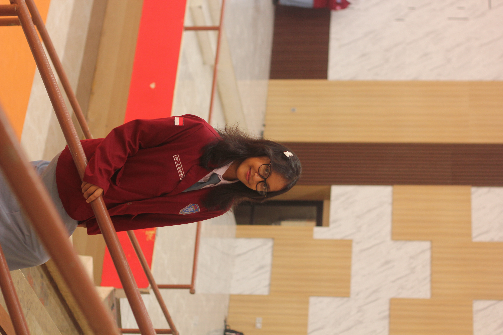
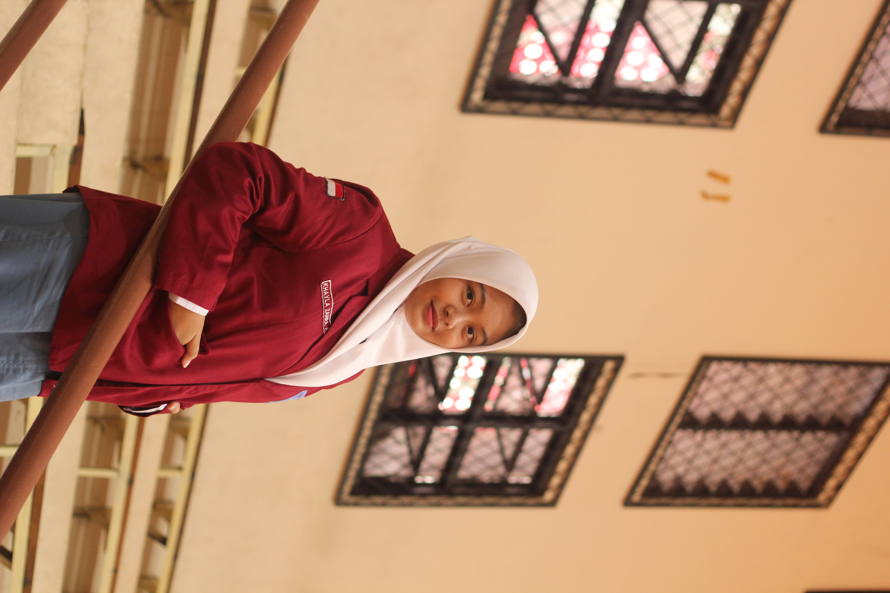
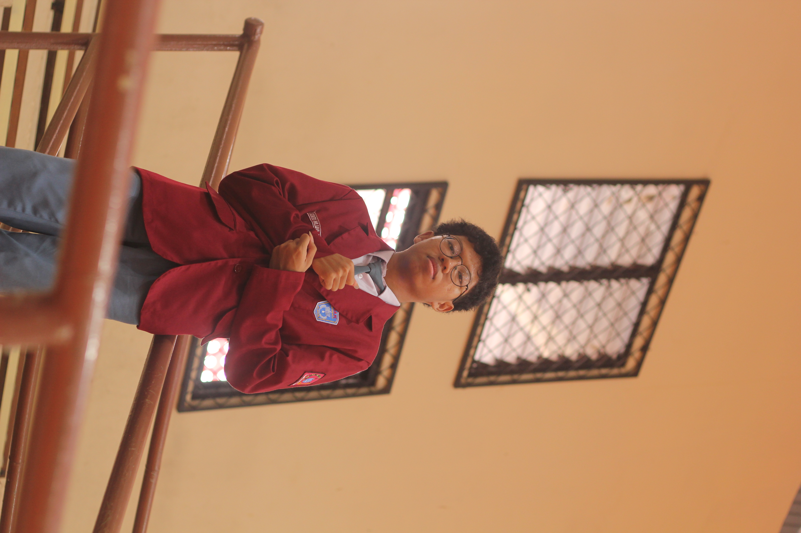
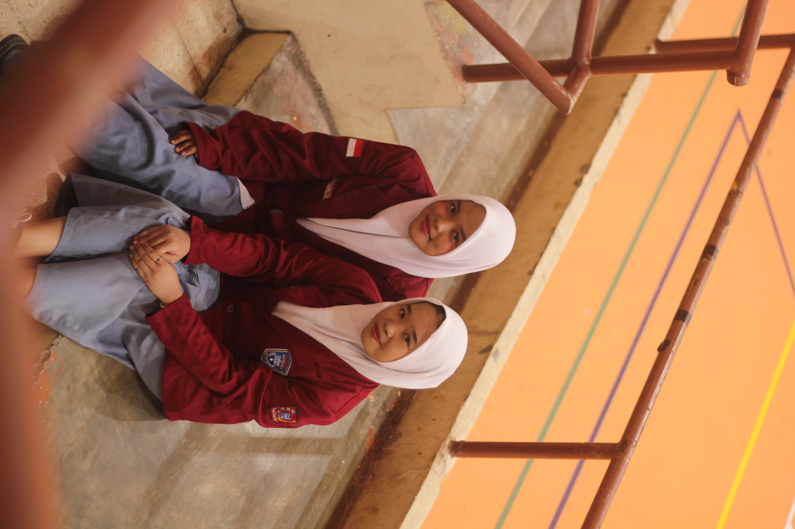
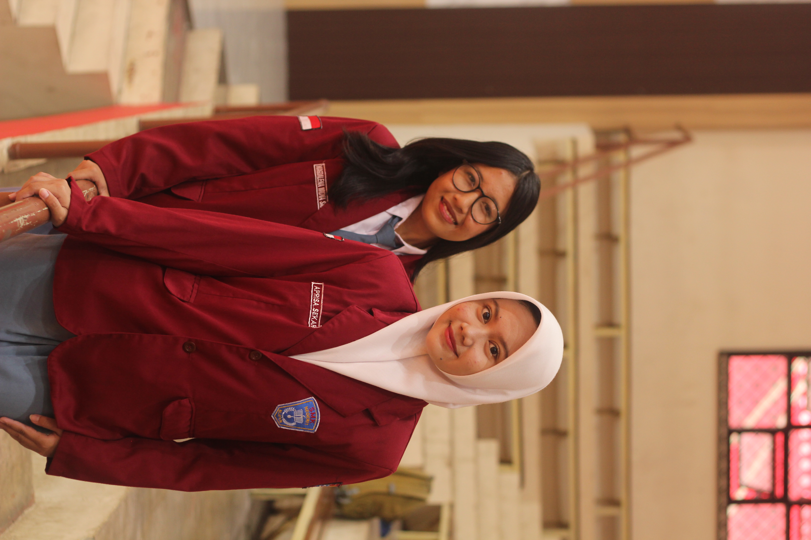
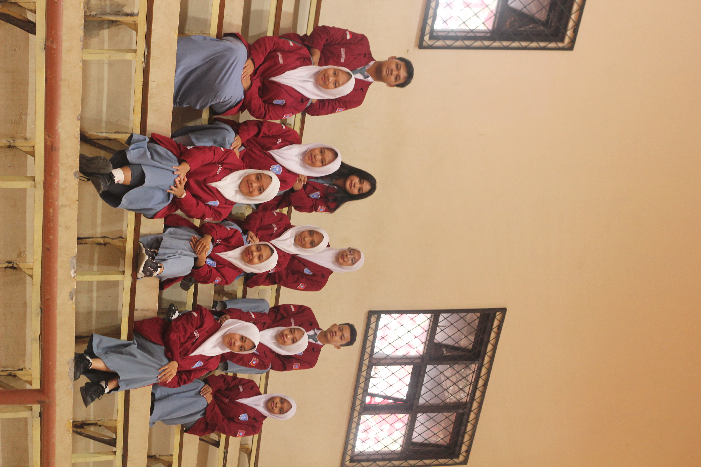
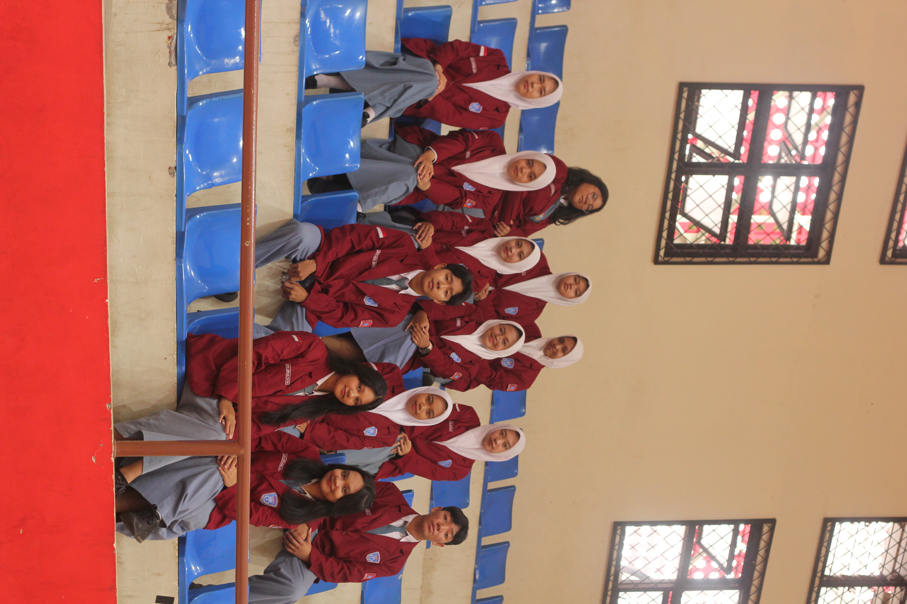
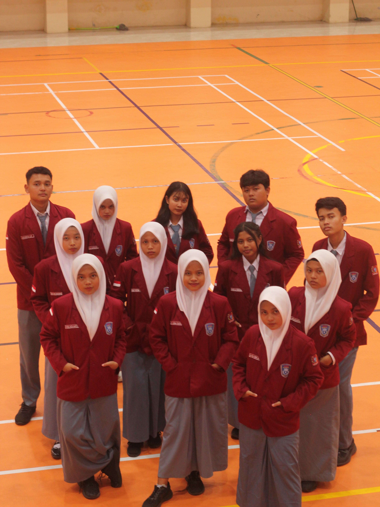

Airlangga
Kegiatan pemilihan Ketua OSIS SMK Negeri 1 Klaten sebagai sarana bagi siswa untuk menyalurkan hak suara serta belajar tentang demokrasi, kejujuran, dan tanggung jawab.
MAJELIS PERMUSYAWARATAN KELAS
SMK NEGERI 1 KLATEN
Mewujudkan organisasi yang aktif, aspiratif, bertanggung jawab, dan berintegritas untuk menciptakan lingkungan sekolah yang lebih baik.
𝗠𝗣𝗞 𝗦𝗮𝘁𝗿𝗶𝘆𝗮 𝗔𝗱𝗵𝗶𝗷𝗮𝘆𝗮 hadir sebagai ruang aman bagi aspirasi siswa. Bukan sekadar menyampaikan pendapat, tetapi juga memperjuangkannya dengan tanggung jawab dan integritas. Kami percaya, perubahan besar selalu berawal dari keberanian untuk bersuara.
𝑴𝑷𝑲 𝒕𝒊𝒅𝒂𝒌 𝒉𝒂𝒏𝒚𝒂 𝒎𝒆𝒏𝒋𝒂𝒅𝒊 𝒑𝒆𝒏𝒚𝒂𝒍𝒖𝒓 𝒂𝒔𝒑𝒊𝒓𝒂𝒔𝒊, 𝒕𝒆𝒕𝒂𝒑𝒊 𝒋𝒖𝒈𝒂 𝒃𝒆𝒓𝒑𝒆𝒓𝒂𝒏 𝒂𝒌𝒕𝒊𝒇 𝒅𝒂𝒍𝒂𝒎 𝒎𝒆𝒏𝒈𝒂𝒘𝒂𝒔𝒊, 𝒎𝒆𝒎𝒂𝒏𝒕𝒂𝒖, 𝒔𝒆𝒓𝒕𝒂 𝒎𝒆𝒏𝒅𝒖𝒌𝒖𝒏𝒈 𝒌𝒊𝒏𝒆𝒓𝒋𝒂 𝑶𝑺𝑰𝑺. 𝑺𝒆𝒍𝒂𝒊𝒏 𝒊𝒕𝒖, 𝑴𝑷𝑲 𝒕𝒖𝒓𝒖𝒕 𝒃𝒆𝒓𝒑𝒆𝒓𝒂𝒏 𝒅𝒂𝒍𝒂𝒎 𝒑𝒓𝒐𝒔𝒆𝒔 𝒑𝒆𝒎𝒊𝒍𝒊𝒉𝒂𝒏 𝑲𝒆𝒕𝒖𝒂 𝒅𝒂𝒏 𝑾𝒂𝒌𝒊𝒍 𝑲𝒆𝒕𝒖𝒂 𝑶𝑺𝑰𝑺 𝒚𝒂𝒏𝒈 𝒅𝒊𝒍𝒂𝒌𝒔𝒂𝒏𝒂𝒌𝒂𝒏 𝒔𝒆𝒕𝒊𝒂𝒑 𝒕𝒂𝒉𝒖𝒏𝒏𝒚𝒂.
Menjadi organisasi yang aktif, aspiratif, berintegritas, dan bertanggung jawab dalam mewujudkan lingkungan sekolah yang demokratis, harmonis, serta berprestasi.
Struktur kepengurusan MPK Satria Adhijaya Masa Bakti 2025/2026.








Berbagai program kerja MPK Satria Adhijaya Masa Bakti 2025/2026.
Kegiatan pemilihan Ketua OSIS SMK Negeri 1 Klaten sebagai sarana bagi siswa untuk menyalurkan hak suara serta belajar tentang demokrasi, kejujuran, dan tanggung jawab.
Wadah diskusi terbuka bagi siswa untuk menyampaikan ide, kritik, dan saran mengenai lingkungan sekolah serta merumuskan aspirasi menjadi rekomendasi perbaikan.
Kegiatan bertukar pendapat dan pengalaman antar-MPK mengenai program kerja, kondisi organisasi, serta evaluasi sebagai sarana pengembangan organisasi sekolah.
Kegiatan pengawasan dan pemantauan pelaksanaan program kerja atau event OSIS untuk memastikan kegiatan berjalan sesuai rencana, ketentuan, dan tanggung jawab organisasi.
Jadilah bagian dari MPK Satria Adhijaya. Bersama-sama kita belajar berorganisasi, menyampaikan aspirasi, dan berkontribusi untuk kemajuan sekolah.